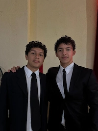

Daniel Reyes | WDD 130

Hello. I'm from Venezuela. I'm 17 years old, and I like to learn new difficult things more early and faster than others. Maybe it sound kinda egoist but, Make something faster and easier than others feels very good. Also I like play videogames. I like to be with my friends. I'm not very talkative, but I'm trying to improve my confidence, so I can talk to new persons. I'm very very lazy. I always left everything to after, everything to the last second, but it doesn't give me stress. I'm a very chill guy that doesn't waste time in meaningless things. If I can do something later, better for me 🥱. To finish this, I am in a movies phase. I love those melancholy movies of Jake Gyllenhaal. Demolition, Stronger and Donnie Darko are just some of so much good writing movies of him. Also I have to mention the REALLY GOD actuation of Timothée Chalamet in Beautiful Boy, DUNE and others. PEAK OF THE CINEMA BUDDY. Leonardo DiCaprio, I'm going for your reflective movies buddy😼